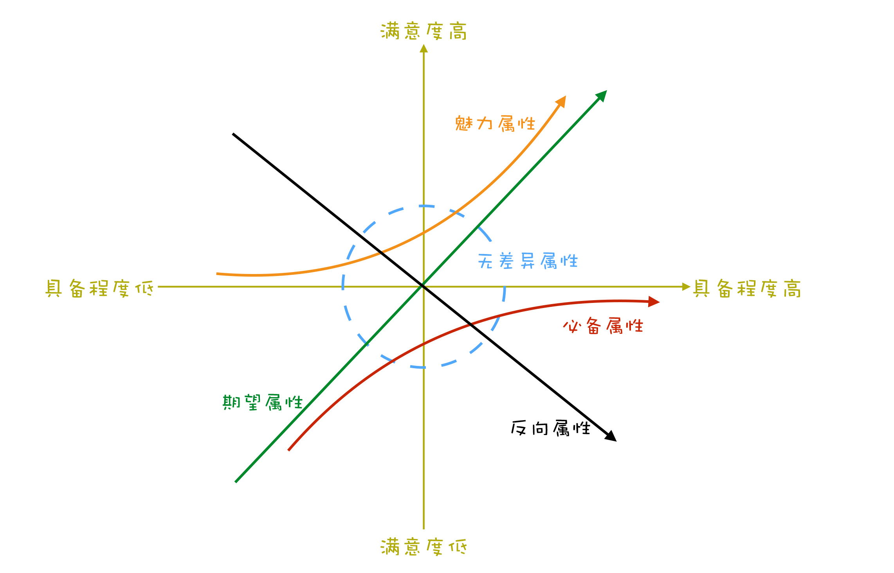
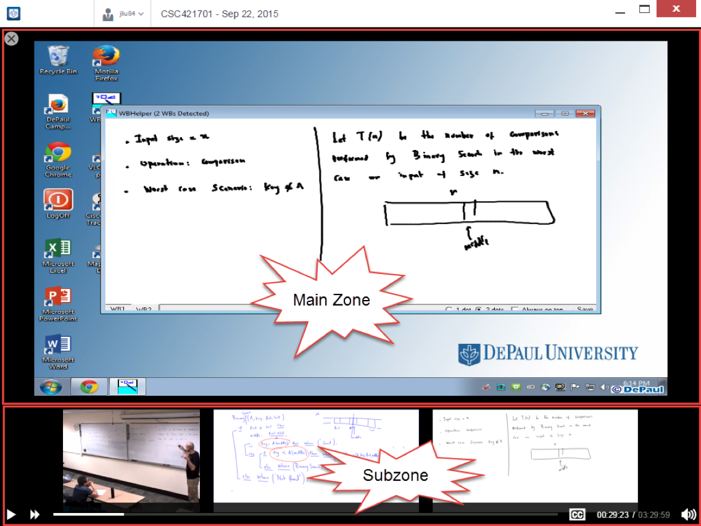

- 00 开篇词 你为什么应该学好软件工程？.md.html
- 01 到底应该怎样理解软件工程？.md.html
- 02 工程思维：把每件事都当作一个项目来推进.md.html
- 03 瀑布模型：像工厂流水线一样把软件开发分层化.md.html
- 04 瀑布模型之外，还有哪些开发模型？.md.html
- 05 敏捷开发到底是想解决什么问题？.md.html
- 06 大厂都在用哪些敏捷方法？（上）.md.html
- 07 大厂都在用哪些敏捷方法？（下）.md.html
- 08 怎样平衡软件质量与时间成本范围的关系？.md.html
- 09 为什么软件工程项目普遍不重视可行性分析？.md.html
- 10 如果你想技术转管理，先来试试管好一个项目.md.html
- 11 项目计划：代码未动，计划先行.md.html
- 12 流程和规范：红绿灯不是约束，而是用来提高效率.md.html
- 13 白天开会，加班写代码的节奏怎么破？.md.html
- 14 项目管理工具：一切管理问题，都应思考能否通过工具解决.md.html
- 15 风险管理：不能盲目乐观，凡事都应该有B计划.md.html
- 16 怎样才能写好项目文档？.md.html
- 17 需求分析到底要分析什么？怎么分析？.md.html
- 18 原型设计：如何用最小的代价完成产品特性？.md.html
- 19 作为程序员，你应该有产品意识.md.html
- 20 如何应对让人头疼的需求变更问题？.md.html
- 21 架构设计：普通程序员也能实现复杂系统？.md.html
- 22 如何为项目做好技术选型？.md.html
- 23 架构师：不想当架构师的程序员不是好程序员.md.html
- 24 技术债务：是继续修修补补凑合着用，还是推翻重来？.md.html
- 25 有哪些方法可以提高开发效率？.md.html
- 26 持续交付：如何做到随时发布新版本到生产环境？.md.html
- 27 软件工程师的核心竞争力是什么？（上）.md.html
- 28 软件工程师的核心竞争力是什么？（下）.md.html
- 29 自动化测试：如何把Bug杀死在摇篮里？.md.html
- 30 用好源代码管理工具，让你的协作更高效.md.html
- 31 软件测试要为产品质量负责吗？.md.html
- 32 软件测试：什么样的公司需要专职测试？.md.html
- 33 测试工具：为什么不应该通过QQ微信邮件报Bug？.md.html
- 34 账号密码泄露成灾，应该怎样预防？.md.html
- 35 版本发布：软件上线只是新的开始.md.html
- 36 DevOps工程师到底要做什么事情？.md.html
- 37 遇到线上故障，你和高手的差距在哪里？.md.html
- 38 日志管理：如何借助工具快速发现和定位产品问题 ？.md.html
- 39 项目总结：做好项目复盘，把经验变成能力.md.html
- 40 最佳实践：小团队如何应用软件工程？.md.html
- 41 为什么程序员的业余项目大多都死了？.md.html
- 42 反面案例：盘点那些失败的软件项目.md.html
- 43 以VS Code为例，看大型开源项目是如何应用软件工程的？.md.html
- 44 微软、谷歌、阿里巴巴等大厂是怎样应用软件工程的？.md.html
- 45 从软件工程的角度看微服务、云计算、人工智能这些新技术.md.html
- 一问一答第1期 30个软件开发常见问题解决策略.md.html
- 一问一答第2期 30个软件开发常见问题解决策略.md.html
- 一问一答第3期 18个软件开发常见问题解决策略.md.html
- 一问一答第4期 14个软件开发常见问题解决策略.md.html
- 一问一答第5期 22个软件开发常见问题解决策略.md.html
- 学习攻略 怎样学好软件工程？.md.html
- 特别放送 从软件工程的角度解读任正非的新年公开信.md.html
- 结束语 万事皆项目，软件工程无处不在.md.html
- 捐赠
17 需求分析到底要分析什么？怎么分析？
你好，我是宝玉，我今天想与你分享的主题是“需求分析”。
通过前面的学习，我们知道在瀑布模型中，第二个阶段就是需求分析阶段，同时需求分析的结果也决定了后续的系统设计、开发、测试等阶段能否顺利如期进行。即使是用敏捷开发，同样也少不了对需求的分析整理。
可以说需求就是整个产品的源头，所以需求分析的结果往往决定了产品的成败。如果没有正确把握客户需求，可能就会一步错，步步错！
就像我在《特别放送 从软件工程的角度解读任正非的新年公开信》提到的秋千的案例：
客户想要一个给三个孩子玩的秋千；产品经理以为就是一个板子加两绳子就行；架构师发现除非把树截开，否则秋千没法荡起来的；程序员以为用绳子和板子连一起就完事了；而真正满足客户需求的，也就只要在绳子上挂个轮胎而已！

所以在本篇文章中，我将带你去了解：需求分析到底要分析什么？以及我们怎么样才能做好需求分析，抓住用户的真实需求，做出来客户想要的软件产品，避免失败或浪费。
什么是需求？
我们日常在项目中，经常会听到“需求”这个词，比如说：
项目经理对产品经理说：用户给我们提了一个需求，想要一个给三个孩子玩的秋千，你分析一下；-
产品经理对架构师说：我们现在有一个需求，在树上拴两绳子，再吊一块板子，你做一下设计。
很明显，这两个需求的意思不一样，前面这个需求是用户需求，后面这个需求是产品需求。
用户需求是由用户提出来的，期望满足自身一定需要的要求，例如用户说：“想要一个给三个孩子玩的秋千。”这种原始的用户需求通常是不能直接做成产品的，需要对其进行分析提炼，最终形成产品需求。
产品需求就是在分析提炼用户真实需求后，提出的符合产品定位的解决方案。就像上面“在树上栓两绳子，再吊一块板子”，就是产品经理针对用户需求提出的解决方案。
需求分析是要分析什么？
其实对用户需求的分析，不是一个动作，而是一个过程。需求分析，就是对用户需求进行提炼分析，最终形成产品需求的过程。
而针对每个用户需求的需求分析过程，需要经过三个步骤。
第一步：挖掘真实需求
大部分用户提的需求，都不见得是其真实的需求，需要透过现象看本质，去挖掘其背后真实的需求。就像福特汽车创始人亨利福特说过的：
如果我最初是问消费者他们想要什么，他们应该是会告诉我，“要一辆更快的马车！”
这里“要一辆更快的马车”就是一个典型的用户需求，但这并非是用户的真实需求，用户的真实需求，需要通过分析才能得到。
要分析用户的真实需求，可以从三个角度入手。
- 目标用户：用户不同，诉求也不一样；
- 使用场景：使用场景不一样，解决方案也会有所不同；
- 想要解决的问题：用户背后想要解决的问题是什么。
我们假设目标用户是普通乘客，使用场景是日常出行，那么用户想要解决的问题其实并不简单是“要一辆更快的马车”，想要更快的马车只是用户自己能想到的解决方案，而他想解决的问题是“更快更舒适的出行方式”。
而现实项目中，大多数人需求分析的不正确，就是因为没有挖掘出用户的真实需求。
我们再看之前的秋千项目，目标用户是三个孩子，使用场景是一起户外玩耍，想解决的问题其实是能有一起玩的娱乐设施。
第二步：提出解决方案
我们知道了目标用户，其使用场景和想要解决的问题，就可以结合产品定位，提出相应的解决方案。
比如针对想要“更快更舒适的出行方式”日常出行的乘客，我们就可以提出汽车的解决方案，而不一定要局限于马车，汽车能更好的满足用户需求。
针对三个孩子想有一个在户外一起玩的娱乐设施这个需求，我们可以提供一个轮胎式的秋千，就可以很好的满足他们的需求，我们甚至可以建一个小型游乐园。
第三步：筛选和验证方案
在提出方案后，我们需要对方案进行筛选，比如对于秋千项目，建小型游乐园的方案虽然能满足需求，但是成本太高，需要排除掉。
在选好方案后，还需要对方案进行验证，以确保方案能解决用户需求。
在传统瀑布模型中，选定方案后，会写成产品设计文档，走相应的评审流程，评审完成后再进行设计、开发和测试，测试完成后会让客户再进行验收。而敏捷开发，在整个开发过程中，每个迭代或者关键的里程碑，也一样需要客户进行验收。
通过以上三步，就可以对用户需求进行提炼分析，最终形成产品需求。
所以在需求分析过程中，分析的就是一个个用户的需求，找出背后的真实诉求，再有针对性的提出解决方案。
对于解决方案，要进行筛选和验证，有些不可行的用户需求不会变成产品需求，可行的用户需求会按照优先级进入实施阶段，最终变成产品。
怎样做需求分析？
前面我介绍了对单个用户需求的分析，主要经过三个步骤：
第一步：挖掘真实需求；
第二步：提出解决方案；
第三步：筛选和验证方案。
而软件项目的用户需求，从来就不是单一的，而是一系列需求，所以对于软件项目的需求分析，还需要增加收集整理的步骤。整个过程是迭代进行的，如下所示：
收集需求：对用户需求进行收集整理；
分析需求：对需求进行分析，挖掘用户真实需求；
需求评估：筛选过滤掉不可行的需求；
需求设计：针对用户需求提出解决方案，设计成产品方案；
验证需求：验证方案是否可行。

我在美国 DePaul 大学读书的时候，曾在学校兼职，当时接到一个项目，要为计算机学院的网络教学系统做一个网页版的播放器。
我们知道现在的课堂里面，老师上课的时候，会用电脑放 PPT 或者课件，同时还要在黑板（也有的是白板）上写写画画辅助说明。
DePaul 大学的网络教学系统，就是在老师上课的时候，用摄像头把老师讲课的整个过程都录制成视频，同时也会用特殊的软件，把当时电脑屏幕上显示的内容，和白板上写的内容，都录制下来。
这样选网络课程的同学可以通过网络直接观看，既不会漏了老师讲的内容，也不会错过老师在电脑上放的和白板上书写的内容。播放器要做的就是要播放录制的教学视频、电脑屏幕和白板。
我将以这个项目为例，讲讲如何做需求分析。
- 收集需求
这个项目的原始需求是老师给我的，只是告诉我要做这样一个播放器，让学生能看教学内容。而这个需求还不够，我还需要继续收集用户需求。
收集用户需求有很多方法，这里列举部分：
头脑风暴：就是大家一起开会头脑风暴讨论；
用户调研：通过调查问卷或者访谈，通过问用户一些问题收集反馈；
竞品分析：通过分析其他同类产品的功能获得需求；
快速原型：通过原型来收集反馈，收集确认需求。
拿播放器的项目来说，头脑风暴没有足够的项目成员，也没有同类产品可以做竞品分析，做原型的话，成本有点高，所以用户调研就是最适合的收集需求的方法。它不仅简单，而且能收集到真实的用户反馈。于是我通过微信群、邮件、用户访谈从老师、领导和学生那分别收集了一些反馈。
老师们没有什么有效反馈，因为他们基本不需要用到这个软件，领导们有个需求就是希望能播放字幕，而很多学生希望能有 2 倍速快进功能。
- 分析需求
收集了需求，就要分析用户的真实需求，这是最难的部分，也是最体现产品经理需求分析水平的地方。
用户需求背后的真实需求有三个层次：
表层需求：用户对解决问题的期望，例如马车更快；
深层需求：用户的深层次动机，诉求产生的原因，例如乘客对出行速度的要求；
底层需求：人性本能的需求，例如对安全感对舒适的追求。
要分析好用户需求背后的真实需求，就是要结合“目标用户”和“使用场景”，按照上面三个层次去思考。
我们拿刚才播放器为例，目标用户是学生，使用场景是学校机房或者家里，希望解决以下问题。
字幕的问题：
表层需求：显示字幕；
深层需求：语言不好，跟不上老师节奏；
底层需求：聋哑学生无法听到声音，只能通过字幕学习。
快进的问题：
表层需求：能快进播放；
深层需求：可以节约学习的时间，提高效率；
底层需求：取得好的学习成绩
经过这么一分析，基本上就对于用户的真实需求心里有数了。
- 需求评估
需求收集分析完了后，还需要进一步评估，以决定做还是不做，优先级如何，先做哪些再做哪些。
需求评估考虑的因素有：
可行性：技术能否实现；
成本：人力成本、时间成本；
商业风险和收益：有没有商业上的风险，收益是否合理；
紧急性与重要性：是不是用户迫切的需求。
如果确定可行，还需要评估其优先级。评估优先级一个简单的方案就是用“紧急重要四象限”的方法来区分：

复杂一点的有 KANO 模型，如下图所示。

红色曲线，是用户认为必须要有的功能；
绿色曲线，就是用户明确提出的需求；
黄色曲线，属于兴奋型需求，就是用户自己没想到，超出预期的功能。
回到我们播放器的例子：
红色曲线（必须要有的功能）：能播放视频、播放电脑屏幕，播放白板；
绿色曲线（用户明确提出的功能）：字幕、2 倍速快进；
黄色曲线（超出预期功能）：10 秒快进、10 秒快退、在时间轴上记录笔记。
- 需求设计
在分析和评估完需求后，还需要提出解决方案，也就是对需求进行设计，做出来有效的产品设计方案。最终的产品设计，会落实到人机交互上面，用户可以通过软件界面交互。
现在产品设计方面，各个平台都有一套比较成熟的界面标准控件，大部分产品设计都可以基于标准界面控件，组合成满足需求的用户界面，在满足功能的前提尽可能做得易用和美观。
在需求设计的时候，可以用草图、原型设计工具、界面设计工具进行设计。
在需求设计阶段，可以参考其他成熟的产品。比如我在设计播放器时，也是通过借鉴其他软件的设计来完成的，比如说向 Youtube 借鉴了视频播放器的设计，向 Skype 的电话会议系统借鉴了其播放区域切换的交互，最终完成了产品设计。

\5. 验证需求
在需求设计好后，还需要进行验证，看解决方案是否能满足用户的需求。
对需求的验证方式其实是贯穿整个软件项目生命周期的，在需求分析阶段，会反复验证确认设计好的需求是否满足用户的真实需求，例如各种设计评审。
在产品开发完成后，也需要有需求的验收，以确保开发出来的软件产品是客户想要的，满足客户需求的。
现在很多互联网产品，还有一种基于数据的验证需求方式，也就是 A/B 测试。
设计好一个功能上线后，并不直接让所有用户使用，而是先给一小部分用户使用，然后分析数据，看使用这个功能的用户群和不使用这个功能的用户群，在营收、访问量、活跃度等关键数据上是更好还是更坏。如果好，就加大比例，如果数据不好，可能就会调整甚至取消这个功能。
我在设计播放器的时候，首先用 PPT 做了一个简单的草图，拿去给老师确认，收集一些反馈后，写了一个 PC 版的软件原型，拿给一部分同学试用。在收集反馈后，做了一些修改和调整，最终确认了产品的设计。
在需求分析完成后，就可以基于需求分析形成的文档，进行设计和开发了。（DePaul 大学的网络教学系统产品演示）
总结
今天带你一起学习了软件工程中一个非常重要的知识点：需求分析。
需求分析，就是一个将用户需求变成产品需求的过程。要做好用户需求的分析，需要找出来隐藏在用户需求背后的真实需求，还要针对用户的真实需求提出解决方案，最终验证方案是不是能满足好用户需求。
需求是整个产品的源头，很多软件项目失败的原因就在于没有做好需求分析，软件中很多浪费也来源于需求没想清楚导致的返工。做好需求分析对于软件项目来说非常的重要。
要做好软件项目的需求分析，需要做好需求的收集整理工作，然后对收集好的需求进行科学的分析，评估是不是可行以及划分优先级，对可行的需求项进行设计，最后还要验证设计出来的结果是不是满足需求。
希望你通过这节课的学习，能科学地运用好需求分析的知识，对项目的需求分析把好关，保证最终产品能满足用户需求，超出用户预期。
© 2019 - 2023 Liangliang Lee. Powered by gin and hexo-theme-book.